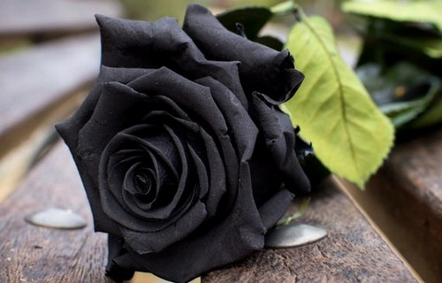

UN ARTÍCULO SOBRE MÍ
Buenos días a todos los lectores de mi humilde primera página
Mi profesor me dio la
tarea de encontrar información en cualquier revista o libro, pero decidí hacer una lista de 6 temas
relacionados conmigo. A continuación Ustedes veran varios artículos, que al hacer clic en uno
ellos le llevarán al tema correspondiente.
Я
Espero que lo disfruten.
About
Mi nombre es Steve Williams Paucar Mendoza, como probablemente ustedes, mis lectores, ya habrán notado en la
titulo principal.
Desde muy pequeño siempre he soñado con ir a Rusia. Y todo gracias al hecho de que
cuando era pequeño, mi madre y yo vimos una película llamada «El Payaso Joker», La película la
pueden ver en línea aquí en
YouTube.
Todos mis amigos se rieron de mí porque una vez les dije que volaría a Rusia,para estudiar y hablar ruso, pero en
ese momento era casi imposible porque era un país lejano, otro continente, cruzando el océano
Atlántico, un idioma no conocido, diferentes comidas y con un clima fríolento.
Pero mis padres
confiaron en mí, creyeron en mí y siempre me dijeron que,todo es posible, porque la palabra "no puedo"
no existe y para las cosas imposibles tomaría un poco más de tiempo.nada mas.

Y después del colegio, a muy temprana edadn, empecé mi
aventura
en países fríos ya que era mi sueño. Y mis padres necesitaron mucho más amor para dejarme ir y empezar mi
vida
que para dejarme con ellos.
Country
Yo soy de Perú, oficialmente La Republica del
Perú, es un hermoso País,ubicado en el continete de America del Sur.
Comparte una línea costera con el Océano Pacífico, Ecuador y Colombia al norte, Brasil al este y
Bolivia y Chile al sureste. Su territorio consta de paisajes variados: los valles, mesetas y altas cumbres
de los Andes se extienden al oeste hacia la costa desértica y al este hacia el Amazonas. Es uno de los
países con mayor biodiversidad y mayores recursos minerales del mundo..
History
Volvamos al momento en el que les contaba por qué decidí ir a Rusia. Después de ver la película, decidí que
quería aprender ruso, que es uno de los 5 idiomas más difíciles del mundo.
entre ellos tenemos:
- El Idioma Árabe
- El Idioma Chino
- El Idioma Alemán
- El Idioma Ruso
- El Idioma Japonés
Y a pesar de que mi país es un país tropical con un clima maravilloso, comencé mi aventura en Rusia desde muy joven, con solo 17 años. Ganándo una gran experiencia en la vida, habiendo vivido a su vez a diferentes países y ciudades de la ex Unión Soviética:
Cities
A continuación les estare contando un resumen de mi hitoria, experiencia y aventuras en cada país.
Belarus - Minsk

Minsk fue el primer lugar donde comencé mis primeros estudios, y el primer país de la ex Unión Soviética
donde viajé.
Por primera vez vi alrededor mio a gente con ojos claros. Hablaban un idioma que no
conocía y que
escuché por primera vez en la película "El Payaso Joker". Dos meses después de mi llegada a Minsk, ya
quería volver a casa. Ya que fue difícil para mí. Y es doblemente difícil porque estaba solo. Entonces
levanté mis ojos al cielo y le dije a Dios: «Dame fuerzas y haz un milagro para no rendirme». Y
en ese momento, el 25 de noviembre de 2003, alrededor de las 20:00, después de hablar con mi madre a través
del Windows Live
Messenger
empezó a nevar en Minsk. Fue la primera que veía la nieve en mi vida.
Para mí, ver la nieve es un
milagro creado
por Dios. Y cuando vi que la nieve que cayendo sobre la palma de mi palma, me dije a mi mismo : "Dios me
escucha y está siempre conmigo".
y desde ese momento Decidí no rendirme y seguir adelante.
Así empezó mi vida en países fríos,
pero con calor en el alma, sabiendo que Dios está siempre conmigo.
Hice muchas amistades, juntos hibamos a varias fiestas. Luego empezé a trabajar. Pero sentí que faltaba
algo,
y no sabía qué, luego entendería que Dios tendría preparado otro camino para mí - y me mudé a Ucrania
- Kiev.
Ucraina - Kiev

Dios me envió a Ucrania para ayudar a mi hermana, para apoyarla, cuando nació su hijo, mi sobrino
Joaquinchik.
Que Lo considero como mi hijo, porque empezó conmigo a hablar y a caminar
por primera
vez.
Al principio me fue difícil, ya que no estaba preparado para asumir las responsabilidades de padre tan
repentinamente.
Además, tuve que estudiar, trabajar y ayudar a mi hermana a criar a nuestro
Joaquinchik.
. Y Yo, como cualquier persona, tengo defectos.
Pero mis padres me inculcaron que primero Dios, luego
la familia y despues el trabajo. Y mi familia me enseñó que por tu familia uno tienes que luchar todos los
días
para darles todo. Posteriormente mi hermana terminó sus estudios y regresó al Perú con mi sobrino
Joaquinchik.
Y Me quedé solo otra vez, ya que tenía que terminar mis estudios.
Fue muy difícil para mí, pero mi
amigo
Nikolay siempre me apoyó. Y Dios tuvo otra gran sorpresa con un gran regalo para mí.
Y Fue en Ucrania
donde conocí a mi futura esposa.
Rusia - Krasnoyarsk

Krasnoyarsk es esa hermosa ciudad que me dio lo más preciado que cualquiera puede obtener.
Es Una
familia – una esposa y unas niñas , que ella me regalo.
Me conocí con mi esposa en Ucrania.
Ella
es de Krasnoyarsk y yo ni sabia dónde estaba esa ciudad.
Debido a la similitud en el nombre, al
principio pensé que era la ciudad de Krasnodar. Y pensé que
no era tan difícil mudarme allí. Pero no me importaba adónde ir. Ahora lo principal era estar siempre cerca
de mi familia, y me dije a mi mismo, que estaba listo para ir incluso hasta la Siberia.
Y así sucedió todo. Llegué a Krasnoyarsk.
Así empezó mi vida familiar. Pero lamentablenete había muchas
cosas que no
le daría importancia, y no pude
darle a mi familia todo lo necesario.
En este momento ellos se encuentran lejos de mi ya 3 largos años
Es por eso que decidí inscribirme en este curso de creación de paginas de web para poder ganar más
dinero y estar con mi familia nuevamente.
Contacts
Ustedes me pueden encontrar en la siguientes redes sociales:
EL SIGNIFICADO DE LOS COLORES
Matreshka

Originalmente la matrioska rusa contenía siete figuras. Este hecho también tiene una explicación. Desde la antigüedad se cree que nuestro cuerpo contiene siete auras heterogéneas, como una fusión de nuestra energía humana con el poder del Infinito. Y según la tradición, el atuendo de cada uno de los siete, debía estar pintado con uno de los colores del arco iris en estricto orden, empezando por el rojo y terminando por el morado. Como resultado, la matreshka más pequeña era siempre de color rojo y la más grande era siempre de color morado. Así es como se distribuyen los colores en nuestro cuerpo sutil y en el espacio.
El color Rojo, El color Anaranjado, El color Amarillo, El color Verde, El color Celeste, El color Azul, El color Morado.
-
El rojo es el primer color, representa el cuerpo físico. significa la fuerza, pero sus vibraciones no son suficientes como para que llegue hasta a los cielos. Al mismo tiempo, te permite aferrarte a la Madre Tierra y nutrirte de su energía vital. Si una persona se queda sin la energía de la Tierra, experimentará una disminución de la fuerza y de vitalidad.
-
El anaranjado es el color de la fertilidad.
-
El amarillo implica salud y vitalidad.
-
El verde da fuerza mental, desarrolla la intuición.
-
El celeste mejora la capacidad de comunicación.
-
El azul es el color de las capacidades superiores. Puede revelar el don de la previsión y la comprensión de las leyes del universo.
-
El color morado cierra el aura. Distribuye de manera uniforme y armoniosa las energías de todo tipo en el cuerpo.
Pero, sobre todo, la matrioska es un símbolo de la maternidad, la familia y la fertilidad. Incluso el propio nombre lo dice, porque la palabra "matryoshka" procede del nombre Matrena, y en el corazón del nombre está la palabra "mater", que en latín se traduce como "madre".
Las Rosas
Simbología general de las rosas
Los pétalos de las rosas son bastante delicados y se aprecian por su imagen única, por lo que en general simboliza amor y belleza. Por otro lado, es precisamente por sus espinas en los tallos que en menor medida simboliza protección.
Rosas Rojas, Rosas Blancas, Rosas Amarillas, Rosas Anaranjadas, Rosas Rosadas, Rosas Moradas, Rosas Azules, Rosas Negras.
Rosas Rojas

El color rojo por si solo representa el amor, la pasión y el erotismo, por ello no es de extrañar que las rosas rojas intensifiquen los mismos. Además, funcionan bien como medio para la seducción e indicar atracción al regalarlas a una persona de interés romántico.
Rosas Blancas

Estas rosas se usan mayormente como detalle en bautizos, comuniones y bodas, y es que las rosas blancas son sinónimo de pureza, paz e inocencia principalmente. Funcionan como presente para pedir disculpas sinceras o para un amor autentico.
Rosas Amarillas
Son vibrantes por ser de un color asociado al sol, emitiendo energía, diversión, felicidad y alegría con solo verlas. Asimismo, las rosas amarillas son grandiosas para representar la buena amistad entre las personas.
Rosas Naranjas
Es otro color que destaca, más cuando está presente en una rosa, con significados similares al anterior como la diversión, entusiasmo y alegría. En este sentido son excelentes como un regalo diferente por ser exóticas.
Rosas Rosadas
Las rosas de color rosado son las mejores para dar a mujeres por su fuerte significado con lo femenino, así como cariño y protección. Son una buena alternativa a las rosas rojas para generar simpatía, cariño, respeto, admiración y amor por una mujer.
Rosas Moradas

Son rosas poco frecuentes de hallar en las tiendas, pero son de las más hermosas por su tonalidad suave, con gran presencia por significar espiritualidad, eternidad y magia. También son pertinentes para dar y generar calma.
Rosas Azules

Es otro de los colores primarios presentes en las rosas que ha adquirido la simbología de fidelidad, por ser usado en las bodas. Desde otra perspectiva, el significado de las rosas azules se relaciona con la libertad, afecto, tranquilidad y agradecimiento
Rosas Negras
Este tipo de rosas crecen en pocas partes del mundo, por lo que no es común verlas en floristerías o en la naturaleza, sin embargo, por su situación significan autenticidad, pero por su color en algunas culturas es igual a muerte o malas noticias.